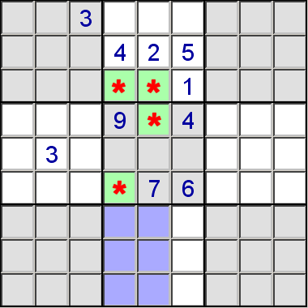
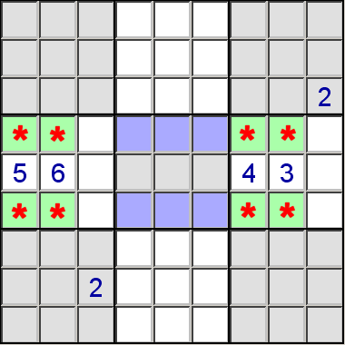

Firstly, If a number appears as candidates for only two cells in two different blocks, but both cells are in the same column or row, it is possible to remove that number as a candidate for other cells in that column or row.
For example, in the partial puzzle below, the green cells marked with the asterisk are the only cells in blocks two and five that can contain a 3. This means the 3 in column four must be in block two or five, as must the 3 in column five. As there can be no other 3s in columns four or five, 3 can be eliminated as a candidate for the cells in these columns for block eight.

Secondly, in the example below, the cells marked with * are the only cells in blocks four and six that can contain a 2. This means that 2 can be eliminated from the candidates for the marked cells in block 5.
